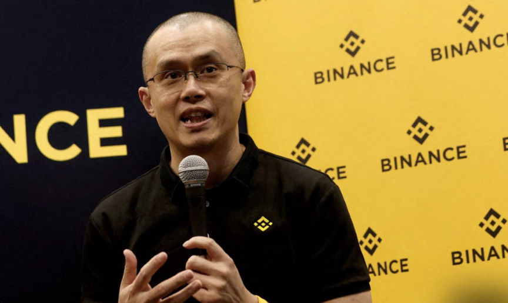
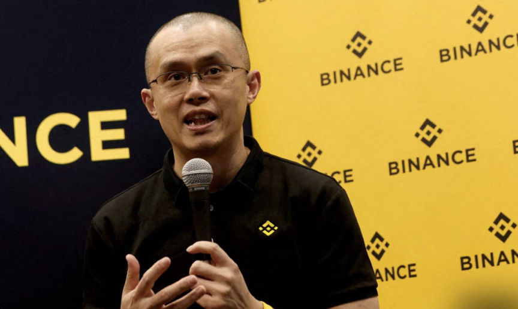

Binance and CZ Plead Guilty to Pay Over $4 Billion
~2 min read | Published on 2023-11-22, tagged Binance, Cryptocurrency, Pleaded-Guilty using 390 words.
Binance and its CEO Changpeng "CZ" Zhao, agreed to plead guilty to violating anti-money laundering and sanctions laws as part of a $4 billion settlement with several US agencies.

Binance’s founder and CEO, CZ, pleaded guilty to failing to maintain an effective anti-money laundering (AML) program and stepped down as CEO of Binance.
Binance admitted that after its launch in 2017, it focused on attracting a large number of users from all over the world including the US. Binance failed to register with FinCEN as a money services business. Binance started blocking US users in 2019 and formed a US exchange for its US users in 2019. It however continued to allow US users to trade on its international exchange by encouraging the use of VPNs to bypass geolocation blocks. It also encouraged its US-based VIP users to register offshore entities that would act as proof of not being located in the US.
Binance facilitated money laundering by failing to implement know-your-customer (KYC) protocols. Binance started requiring KYC verification from its users in August 2021 but continued to allow unverified users to transact on its platforms. It made it compulsory for all its users to be KYC verified in May 2022.
Binance did not monitor transactions made by its users and as a result, never filed suspicious activity reports with FinCEN. Investigations by FinCEN reportedly established that Binance failed to report over 100,000 suspicious transactions.
FinCEN claims the unreported transactions included transactions associated with terrorist groups, including Al Qaeda and ISIS; transactions of millions of dollars associated with at least 24 different ransomware strains; transactions associated with child sexual abuse platforms, such as Dark Scandals; and transactions to and from dark web marketplaces.
Binance also admitted it allowed users from sanctioned jurisdictions to trade on its platform. It thus allowed sanctioned entities and users from sanctioned jurisdictions to trade with US users. It reported facilitated trades of over $898 million between US users and Iran residents from January 2018 to May 2022.
Binance agreed to pay a total of $4,316,126,163. Binance also agreed to retain an independent compliance monitor for three years, in addition to enhancing its anti-money laundering and sanctions compliance programs.
CZ announced he had stepped down as Binance's CEO via a post on X. He also announced Binance's new CEO and assured the platform's users of the safety of their fund.

Changpeng "CZ" Zhao
Binance’s founder and CEO, CZ, pleaded guilty to failing to maintain an effective anti-money laundering (AML) program and stepped down as CEO of Binance.
Binance admitted that after its launch in 2017, it focused on attracting a large number of users from all over the world including the US. Binance failed to register with FinCEN as a money services business. Binance started blocking US users in 2019 and formed a US exchange for its US users in 2019. It however continued to allow US users to trade on its international exchange by encouraging the use of VPNs to bypass geolocation blocks. It also encouraged its US-based VIP users to register offshore entities that would act as proof of not being located in the US.
Binance facilitated money laundering by failing to implement know-your-customer (KYC) protocols. Binance started requiring KYC verification from its users in August 2021 but continued to allow unverified users to transact on its platforms. It made it compulsory for all its users to be KYC verified in May 2022.
Binance did not monitor transactions made by its users and as a result, never filed suspicious activity reports with FinCEN. Investigations by FinCEN reportedly established that Binance failed to report over 100,000 suspicious transactions.
FinCEN claims the unreported transactions included transactions associated with terrorist groups, including Al Qaeda and ISIS; transactions of millions of dollars associated with at least 24 different ransomware strains; transactions associated with child sexual abuse platforms, such as Dark Scandals; and transactions to and from dark web marketplaces.
Binance also admitted it allowed users from sanctioned jurisdictions to trade on its platform. It thus allowed sanctioned entities and users from sanctioned jurisdictions to trade with US users. It reported facilitated trades of over $898 million between US users and Iran residents from January 2018 to May 2022.
Binance agreed to pay a total of $4,316,126,163. Binance also agreed to retain an independent compliance monitor for three years, in addition to enhancing its anti-money laundering and sanctions compliance programs.
CZ announced he had stepped down as Binance's CEO via a post on X. He also announced Binance's new CEO and assured the platform's users of the safety of their fund.